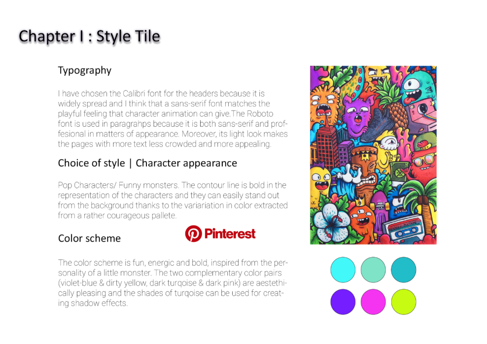

03.02.01 Storytelling and Character Design
Creating this Character PDF presentation has helped me to elaborate on the style of my character and its personality, thing which can help in the creation of the specific character when focusing on details. The story and the storyboard have helped me in building both the scene and the monster and the narrative curve can contribute to better sectioning the storylines and the frames and deciding on the flow of events.
03.03.02 Interactive Animation
“The Life of The Student” is a small piece of interactive animation created through the character and the scene previously ideated and consists of an exercise on chained events which trigger each other in Javascript. This was really important because knowing how to add and remove events listeners based on the starting and ending points of animations is crucial knowledge generally used in websites’ interactivity.